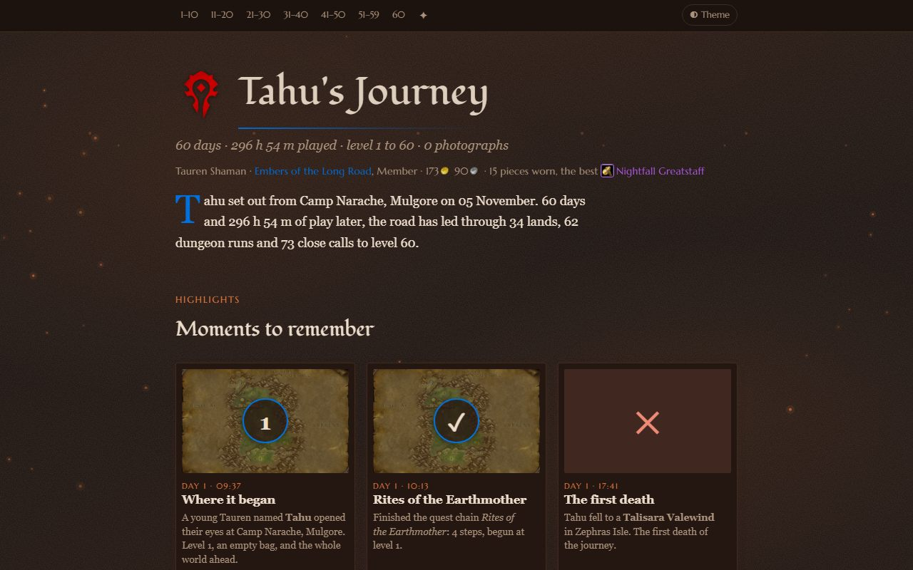
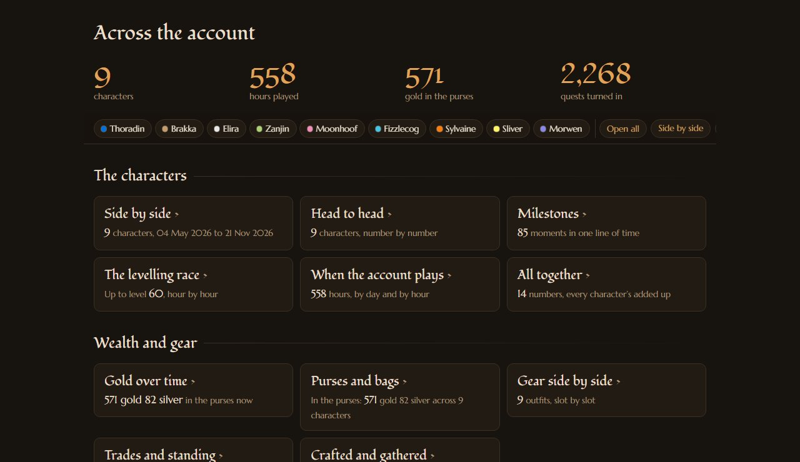

Choose your setup
Pick a card, or answer a few questions and get a suggestion. Then fine-tune it if you like and download: the file carries your choices, and the installer shows them in a summary before anything is written. A snapshot of your addons and settings is saved first.
Seven quick questions or fewer.
Fine-tune Full experience
A small .bat file (about 4 KB). It fetches the newest setup into a Forever Setup folder beside itself and starts the installer.
- Install the CurseForge app and log in. The addons come through it, so they update later like any other.
- Run the downloaded file. If Windows warns about it, pick More info then Run anyway; your browser may ask you to Keep it first.
- Answer the questions with the arrow keys, Space and Enter, or, with your choices made here, check the summary and pick Install now. The grey lines under each list explain the highlighted line.
- Restart the game (a /reload is not enough for new addons). Each character sets itself up on its first login.
Made for this setup
Your journey, as a story
Every character gets one long web page of its adventure: the route on the map, each day played, levels, deaths and close calls, quests, dungeons with their bosses and loot, the people you met, professions, gold, photos of your moments and a closing epilogue.
Built on your PC from what the addons below record while you play; nothing is uploaded. Run Build Journey.bat in the game's Journey folder. Journey only brings just these addons and keeps the rest of your own setup.
Open the example page Made-up data: 60 days of an invented Tauren Shaman. About 11 MB.


Every character, one account
All your characters, side by side
Play more than one character and the Journey folder also gets an index of the whole account: a card for each character, then the account at a glance: side by side and head to head, milestones, the levelling race, when you play, gold over time, purses and bags, gear slot by slot, trades and standing, what you crafted and gathered, dungeons and bosses, what felled you, quests across characters and one Menagerie binder for all of them.
Some addons record each character on its own, others the whole account at once (gold and bags of every character, the card binder); the index reads both. Each character keeps its own story page.
Open the account example Nine invented characters, one of each class, Horde and Alliance.
What each addon adds to the page
- Social Diaryroute, days, levels, deaths, quests, people, PvP
- Journey Iconsicons, map art, professions, gold, reputation, guild
- BiS>Memoriesphotos, gear worn, new-gear lines
- Leatrix Mapsexplored areas on the zone maps (kept switched off)
- Dungeon Journaldungeon run cards, boss portraits, flight times
- Profession journalscatches, journal firsts, badges, legends
- Weatherrain you travelled through
- Lore Foreverlore uncovered, questions asked, zone visits
- Spokenplaces, stories and books you heard
- Questiequests taken and turned in
- Auctionatorauction house listings and sales
- BagBrothergold and bags of every character
- Mannersbuffs given and returned
- Menageriecreature cards, battles, expeditions
Already installed?
These buttons start the tools in your Forever Setup folder. Your browser asks first; allow it to open Windows PowerShell.
- Update now runs Update.bat: the newest helper fixes for what you have. Your settings are not touched. It offers the installer when there is something new to ask.
- Change my answers runs Install.bat: your last answers come up in a summary; pick Change my answers there to go through the questions.
- Nothing happens? The buttons are set up by the installer or Update.bat from version 1.2.6. Download a setup above once, or run Update.bat from your Forever Setup folder, and they work from then on.
What's inside
The setup comes in parts. Open one to see its addons and which setups bring it.
Core14Cinematic look, chat, dialogue, unit frames (always)
Full experience Gameplay only Let me pick
- BugGrabbercatches addon errors quietly (for BugSack)
- BugSackshows caught addon errors when you ask, instead of pop-ups
- Cinematicthe main look: UI fades between fights, cinematic cameras, letterbox, weather
- Dialogue UIquest and NPC talk as a cinematic dialogue
- Glass Foreverminimal chat that fades when quiet
- Hide Anything - Foreverhides the game frames this setup replaces (minimap, target frame...)
- Leatrix Plusmany small quality-of-life options
- MinimapButtonButtoncollects addon minimap buttons into one button
- RPGLootFeeda small feed of what you just looted
- Mouse Over Tooltipa minimal unit tooltip on mouseover
- First Login Setup helperSets the game options and addon profiles the installer picked, once on each character.
- Forever Settings helperOptions > AddOns > Forever Settings: every helper's options on pages (this character, compass, nameplates, map and photos, interface), and per addon the setup's settings or your own.
- Forever Tweaks helperSmall fixes to the game's own frames: cards above Cinematic, the player frame while you eat, Glass's edit box, combat state text, corpse plates and raid frame health.
- Minimap Button Groups helperSorts MinimapButtonButton's buttons into folders: Journals & story, Map & world, Look & sound, Tools.
Action bars2Bartender4 bars that fade with Cinematic
Full experience Gameplay only Let me pick
- Bartender4action bars, laid out for this setup
- Bartender Cine Hover helperLets Cinematic's mouseover bring back faded Bartender4 bars, whose own frames are only 1x1.
Quests & map6Questie, OpenMap, Dungeon Journal, library books
Full experience Gameplay only Journey only Let me pick
- DungeonJournalboss, loot and quest journal for dungeons
- Librarian Books Forevertracks the 40 library books: which you still need and where they are (/librarian)
- OpenMapone seamless world map, every zone stitched together
- Questiequest helper: givers, objectives and turn-ins on the map
- QuestieDBthe quest database Questie reads
- Map Plus helperExtras for the world map: drag OpenMap with Cinematic's camera, dungeon maps from the Forever Dungeon Journal, Questie pins on the world map, and townsfolk icons hidden until you explore their area.
Atlas5dungeon and raid maps (optional)
Optional: five addon folders and about 0.3 seconds more loading when you log in. Dungeon Journal already shows dungeon maps and loot.
Let me pick
- Atlasdungeon and raid maps with their bosses and loot
- Atlas Kalimdor & Eastern KingdomsAtlas maps: the classic dungeons and raids
- Atlas BattlegroundsAtlas maps: battlegrounds
- Atlas Dungeon LocationsAtlas maps: where each dungeon entrance is
- Atlas TransportationAtlas maps: flight paths, boats and zeppelins
Gathering2herbs and ore: sparkles and glow nearby
Full experience Gameplay only Let me pick
- Lueurherbs, ore, chests and quest objects glow as you approach; minimap node icons
- Node Sightgold sparkles on nearby herbs and ore; skill needed in tooltips
Profession journals12Pagle for fishing and a journal for each profession
Full experience Gameplay only Journey only Let me pick
- Paglefishing: progress, a catch collection, goals and a one-key fishing button
- Awlmanac helperA leatherworker's journal.
- Clothbound helperA tailor's journal.
- Cogitations helperAn engineer's journal.
- Elixicon helperAn alchemist's journal.
- Forgery helperA blacksmith's journal.
- Gauzette helperA medic's journal.
- Hidebound helperA skinner's journal.
- Motherlode helperA miner's journal.
- Potluck helperA cook's journal.
- Spellbound helperAn enchanter's journal.
- Thymeline helperA herbalist's journal.
Bags & auction4Bagnon bags, Auctionator
Full experience Gameplay only Journey only Let me pick
- Auctionatorauction house: fast search, price history, quick selling
- Bagnonall your bags in one window
- Bagnon Battlesa backpack auto-battler mini-game inside Bagnon
- BagBrotherremembers each character's gold and bags (Bagnon brings it too)
Whisper windows2whispers open as their own chat windows (WIM)
Full experience Gameplay only Let me pick
- WIMwhispers open as their own chat windows, like a messenger
- WIM Bag Button helperA WIM button right of the Bartender4 bag bar (or on screen without Bartender4), since WIM's own button sits on the hidden minimap.
Journey & memories5Social Diary, memory photos, Journey story pages
Full experience Gameplay only Journey only Let me pick
- BiS>Memoriesa screenshot and a note when something worth remembering happens
- Leatrix Mapsonly its map of explored areas, for the Journey pages; installed switched off (OpenMap is the map)
- Social Diaryremembers the people you meet in the open world
- Journey Icons helperRecords the icon file of every item and class in Social Diary and BiS Memories, plus item names, race and faction, dungeon boss portraits and the route's map art, and logs profession milestones, plus the fish Pagle counted, your guild (members, changes, event log, news), your gold and reputation over time, the quests in your log, what you craft, skin, mine and pick, your jumps, hearthstone uses and repair bills, and the gear you wear with its enchants, for the Journey story page.
- Memories Plus helperExtras for BiS>Memories: a faster album page, Cinematic's look kept in photos, and a photo when Social Diary greets someone again.
Atmosphere4more music, weather, campfires
Full experience Gameplay only Journey only Let me pick
- CozyFiremarks campfires on the map; camp object tooltips
- Forever Ambient Music Extendedmore music from every WoW era, fitted to where you are
- Weatherweather ambience indoors and accessory reminders
- Weather Button Bridge helperPuts Weather's forecast button into MinimapButtonButton, which can't collect Weather's own unnamed button.
Spoken10quests, books and places read aloud (over 1 GB to download)
Full experience Narration only Journey only Let me pick
- Spoken: EnglishSpoken: the English voice packs, all in one
- Spokenreads quests, gossip, places and books aloud
- Spoken Audio: Quests - AllSpoken voices: quests (all)
- Spoken Audio: Quests - AllianceSpoken voices: Alliance quests
- Spoken Audio: Quests - HordeSpoken voices: Horde quests
- Spoken Audio: Quests - SharedSpoken voices: shared quests
- Spoken Audio: GossipSpoken voices: gossip
- Spoken Audio: PlacesSpoken voices: places
- Spoken Audio: ReadablesSpoken voices: books and letters
- Spoken + Lore Forever Bridge helperKeeps Spoken and Lore Forever from talking over each other, and shows Lore Forever's chat hints on screen while chat is faded.
Lore Forever5a narrator for lore (optional: large, slower login)
Optional: the slowest addon of the setup, about 2 seconds more loading when you log in, and large (about 190 MB, plus voice packs from its website).
Narration only Journey only Let me pick
- Lore Forevernarrated lore of the zones, quests, people and items around you
- Lore Forever - Female NarratorLore Forever: the female narrator voice
- Lore Forever - Female Narrator (Horde lands)female narrator: Horde lands
- Lore Forever - Female Narrator: More Peoplefemale narrator: more people
- Lore Forever - Female Narrator: More Placesfemale narrator: more places
Extras13Narcissus character screen, Menagerie card binder, Manners buffs, Recipe List
Menagerie only brings just Menagerie from this part.
Full experience Gameplay only Journey only Menagerie only Let me pick
- Narcissusan immersive character screen and photo studio (/narci); about 0.6 seconds more loading at login
- Mannersone click buffs back whoever buffed you, and passers-by missing your buff; the Journey page reads its favour ledger
- Ackis Recipe Listlists every recipe of your professions, known or not, and where to learn it (/arl)
- Ackis Recipe List: AlchemyRecipe List: alchemy recipes
- Ackis Recipe List: BlacksmithingRecipe List: blacksmithing recipes
- Ackis Recipe List: CookingRecipe List: cooking recipes
- Ackis Recipe List: EnchantingRecipe List: enchanting recipes
- Ackis Recipe List: EngineeringRecipe List: engineering recipes
- Ackis Recipe List: First AidRecipe List: first aid recipes
- Ackis Recipe List: LeatherworkingRecipe List: leatherworking recipes
- Ackis Recipe List: MiningRecipe List: mining (smelting) recipes
- Ackis Recipe List: TailoringRecipe List: tailoring recipes
- Menagerie helperA card binder for the creatures and people of Azeroth.
Compass bar3With Compass or Both (the Exploration question): a compass bar at the top of the screen and its markers.
Full experience Gameplay only Let me pick
- Compass Bara compass bar at the top: quests, party, gathering spots
- Compass Plus helperExtras for Kedge's Compass: markers for quest givers, townsfolk, dungeons, books, campfires, herbs and ore, guards' directions, arrivals and known flight paths.
- Compass Quick Menu helperRight-click Compass Bar for a menu to switch marker types on and off, pick ranges, and limit incomplete and completed quests separately (the active quest always shows).
Cinematic nameplates2With Cinematic nameplates (the Nameplates question): your target's buffs, power and menu on its plate.
Full experience Gameplay only Let me pick
- Plates Plus helperExtras for nameplates: your target's buffs, power bar, target and menu, the quest mark, friendly health bars in fights and faction crests.
- Stripped Unit Frames helperKeeps the player and target frame parts Cinematic's Unit Frames page hides hidden on mouseover too.
Cinematic camera2With the cinematic camera (the Camera question): the camera zooms out in the open, closes in indoors and turns to NPCs who talk to you.
Full experience Gameplay only Let me pick
- DynamicCama more dynamic camera (zooms and shoulder offset by situation)
- DialogueUI Camera Hold helperKeeps DialogueUI's camera framing while a trainer, bank or other service window from the same NPC is open.
ShamanPower2Only if you say yes (asked when you may have a shaman): a totem bar with timers.
Let me pick
- ShamanPowera totem bar with timers and one-click totem drops
- ShamanPower No Corpses helperShamanPower's totem bar ignores dead targets (no bar while skinning or looting) and stays up out of combat while any totem is down or you are in a dungeon or raid.
The setup's helper addons
Small addons made for this setup. Each comes with the part it serves and switches per character in Options > AddOns > Forever Settings.
Profession journalsAwlmanacA leatherworker's journal.
Every piece you make is written down; first kinds, new pieces, titles and badges get a paper toast, and /awlmanac, a key binding or the minimap button opens the book.
Action barsBartender Cine HoverLets Cinematic's mouseover bring back faded Bartender4 bars, whose own frames are only 1x1.
That is all it does.
Profession journalsClothboundA tailor's journal.
Every piece you sew is written down; first kinds, new pieces, titles and badges get a paper toast, and /clothbound, a key binding or the minimap button opens the book.
Profession journalsCogitationsAn engineer's journal.
Every build you make is written down; first kinds, new builds, titles and badges get a paper toast, and /cogitations, a key binding or the minimap button opens the book.
Compass barCompass PlusExtras for Kedge's Compass: markers for quest givers, townsfolk, dungeons, books, campfires, herbs and ore, guards' directions, arrivals and known flight paths.
Each part switches off per character in Forever Settings.
Compass barCompass Quick MenuRight-click Compass Bar for a menu to switch marker types on and off, pick ranges, and limit incomplete and completed quests separately (the active quest always shows).
Shift+wheel on the bar (or a key binding) switches filters: All, Quests, Gathering, Town, Clean. The marker you face shows its name and distance; near markers draw larger. Also /cqm.
Cinematic cameraDialogueUI Camera HoldKeeps DialogueUI's camera framing while a trainer, bank or other service window from the same NPC is open.
That is all it does.
Profession journalsElixiconAn alchemist's journal.
Every potion, elixir and flask you brew is written down; first kinds, new brews, titles and badges get a paper toast, and /elixicon, a key binding or the minimap button opens the book.
CoreFirst Login SetupSets the game options and addon profiles the installer picked, once on each character.
That is all it does.
CoreForever SettingsOptions > AddOns > Forever Settings: every helper's options on pages (this character, compass, nameplates, map and photos, interface), and per addon the setup's settings or your own.
That is all it does.
CoreForever TweaksSmall fixes to the game's own frames: cards above Cinematic, the player frame while you eat, Glass's edit box, combat state text, corpse plates and raid frame health.
Each part switches off per character in Forever Settings.
Profession journalsForgeryA blacksmith's journal.
Every piece you make is written down; first kinds, new pieces, titles and badges get a paper toast, and /forgery, a key binding or the minimap button opens the book.
Profession journalsGauzetteA medic's journal.
Every bandage and remedy you make is written down; first kinds, new makes, titles and badges get a paper toast, and /gauzette, a key binding or the minimap button opens the book.
Profession journalsHideboundA skinner's journal.
Every beast you skin is written down; first kinds of beast, new hides, titles and badges get a paper toast, and /hidebound, a key binding or the minimap button opens the book.
Journey & memoriesJourney IconsRecords the icon file of every item and class in Social Diary and BiS Memories, plus item names, race and faction, dungeon boss portraits and the route's map art, and logs profession milestones, plus the fish Pagle counted, your guild (members, changes, event log, news), your gold and reputation over time, the quests in your log, what you craft, skin, mine and pick, your jumps, hearthstone uses and repair bills, and the gear you wear with its enchants, for the Journey story page.
Shows nothing in game.
Quests & mapMap PlusExtras for the world map: drag OpenMap with Cinematic's camera, dungeon maps from the Forever Dungeon Journal, Questie pins on the world map, and townsfolk icons hidden until you explore their area.
Each part switches off per character in Forever Settings.
Journey & memoriesMemories PlusExtras for BiS>Memories: a faster album page, Cinematic's look kept in photos, and a photo when Social Diary greets someone again.
Each part switches off per character in Forever Settings.
ExtrasMenagerieA card binder for the creatures and people of Azeroth.
Kills can drop a creature's card, meeting someone can earn theirs, and playing fills a bar toward packs. /menagerie opens the binder.
CoreMinimap Button GroupsSorts MinimapButtonButton's buttons into folders: Journals & story, Map & world, Look & sound, Tools.
Right click a folder to move any button. Shows MinimapButtonButton's button only while the mouse is on it or its list is open.
Profession journalsMotherlodeA miner's journal.
Every vein you strike is written down; first veins, new gems, titles and badges get a short toast, and /motherlode (or a key binding) opens the book. A minimap button opens it too.
Cinematic nameplatesPlates PlusExtras for nameplates: your target's buffs, power bar, target and menu, the quest mark, friendly health bars in fights and faction crests.
Each part switches off per character in Forever Settings.
Profession journalsPotluckA cook's journal.
Every dish you cook is written down; first kinds, new dishes, titles and badges get a paper toast, and /potluck, a key binding or the minimap button opens the book.
ShamanPowerShamanPower No CorpsesShamanPower's totem bar ignores dead targets (no bar while skinning or looting) and stays up out of combat while any totem is down or you are in a dungeon or raid.
Shrinks its Drop All button, a fixed 26x26 with no size option.
Profession journalsSpellboundAn enchanter's journal.
Every enchant, make and disenchant is written down; first kinds, new finds, titles and badges get a paper toast, and /spellbound, a key binding or the minimap button opens the book.
SpokenSpoken + Lore Forever BridgeKeeps Spoken and Lore Forever from talking over each other, and shows Lore Forever's chat hints on screen while chat is faded.
That is all it does.
Cinematic nameplatesStripped Unit FramesKeeps the player and target frame parts Cinematic's Unit Frames page hides hidden on mouseover too.
That is all it does.
Profession journalsThymelineA herbalist's journal.
Every herb you pick is written down; first herbs, new pressings, titles and badges get a paper toast, and /thymeline, a key binding or the minimap button opens the book.
AtmosphereWeather Button BridgePuts Weather's forecast button into MinimapButtonButton, which can't collect Weather's own unnamed button.
That is all it does.
Whisper windowsWIM Bag ButtonA WIM button right of the Bartender4 bag bar (or on screen without Bartender4), since WIM's own button sits on the hidden minimap.
Keeps whispers in WIM by turning off Glass's whisper windows and whisper tabs.
Compass, minimap hiddenZone BarWith Hide Anything hiding the minimap: takes the zone name (world map, clock), calendar, tracking button and mail icon out of it, each Shift-dragged to its own place (first under the bag bar), and hides the AddOns button and day/night dial.
Keeps the hidden minimap cluster from coming back half-faded. With the minimap on, nothing changes.
Questions
What do I need?
Windows, World of Warcraft with the _forever_ client, and the CurseForge app installed and logged in. Mac and Linux are not supported.
What does it change on my PC?
It adds addons to _forever_\Interface\AddOns (through CurseForge, plus the helper addons), writes the settings you agree to in _forever_\WTF, and keeps a backup folder in _forever_ for snapshots. The setup's own files sit in the Forever Setup folder next to the file you downloaded. Since 1.2.6 it also adds a small per-user link handler so the buttons on this page can start Update.bat and Install.bat; no admin rights are needed for any of it.
Will it overwrite my settings?
Only where you say so. For every addon you choose the installer's settings or your existing ones, and addons with profiles can take the installer's as an extra profile beside yours. In game, Options > AddOns > Forever Settings switches each addon between the two at any time. Your sound and graphics settings, key bindings and macros are never touched.
Can I undo it?
Yes. Every install saves a snapshot first. Uninstall.bat in the Forever Setup folder removes the whole setup, goes back to any snapshot, takes single parts out, or gives you your own settings back for some addons. Your progress (Lore Forever journey, key bindings, macros) always stays.
Can I try it on one character first?
Yes. The installer asks which characters get the setup; the others keep its addons switched off. Run Install.bat again later to add more.
How do updates work?
The addons update through the CurseForge app like any other. The setup's helpers and installer update with Update now above (or Update.bat), which says what's new and leaves your settings alone. New addons and new questions come through the installer, which Update.bat offers when there are any.
Which setup should I pick?
Full experience if you want the setup as it was made to be played, voices included. Gameplay only is the same without the narration voices, a much smaller download. Journey only, Narration only and Menagerie only add just that to your own addons and leave your settings alone. Let me pick lists every addon one by one.
Does it slow down logging in?
A little. Lore Forever is the slowest addon (about 2 seconds more at login), which is why it is optional; Atlas adds about 0.3 seconds and Narcissus about 0.6.
Something went wrong. What do I send?
The installer writes install-log.txt, Update.bat update-log.txt, in the Forever Setup folder. Send that file to the friend who sent you the setup. Many common problems are answered under Help below.
What's new
1.2.6 (2026-11-22)
- A downloads page: https://tgabrielc.github.io/forever-setup/ . Each setup there has its own download, which starts the installer on that setup. Once the setup is on your PC, the page's "Update now" and "Change my answers" buttons start Update.bat or Install.bat from your setup folder (your browser asks first). Update.bat or the installer sets those buttons up; removing the whole setup takes them away.
- The downloads page can also make your choices: answer a few questions for a suggested setup, or fine-tune any setup there (look and feel, parts, single addons). Its download then carries your answers, and the installer goes straight to its summary.
- Extras now also holds Manners (one click buffs back whoever buffed you, and passers-by missing your buff) and Ackis Recipe List with its nine profession data addons (every recipe of your professions, known or not, and where to learn it: /arl). New addons load after a full game restart. Menagerie only is unchanged.
- Journey only now also offers BagBrother (each character's gold and bags, for the page's account part; the data half of Bagnon, without its bag windows) and Manners (the favour ledger), ticked at first on a new setup. An earlier Journey only setup keeps what it had: tick them in the journey list ("Change my answers").
- Left out means gone: an addon you untick (or whose part you untick) is now removed from your AddOns folder, CurseForge addons with their extra folders too, so the CurseForge app stops updating them. This counts for addons you had before the setup as well. The summary lists them before anything happens; your settings for them stay, and ticking one again on a later run brings it back. Journey only removes only what you untick in its list (the voices start ticked if you have them); Narration only and Menagerie only leave the rest as it is.
- Update.bat cleans up too: an addon your picks leave out that an earlier setup only switched off is removed. Addons you had before the setup are only removed by the installer, after its summary names them.
- Fewer helper folders: 30 small helpers now live in five, Compass Plus, Plates Plus, Map Plus, Memories Plus and Forever Tweaks. Each old helper is a part you switch per character in Options > AddOns > Forever Settings. Your settings for them move over, and one you had switched off or left out stays off. The old folders are removed. The BiS>Memories album page now opens from Interface\AddOns\MemoriesPlus\BiSMemoriesAlbum\Album.
- Stripped Unit Frames comes only with Cinematic's nameplates: pick the original nameplates and target frame and it is not installed (an earlier setup's copy is removed), so the player and target frames stay whole.
- Dialogue UI is no longer set up by the installer: it starts with its own defaults, for you to set as you like in its options. A setup that already has the installer's keeps them; Options > AddOns > Forever Settings switches Dialogue UI back to your own.
1.2.5 (2026-11-19)
- Bartender4 left Core for its own part, Action bars: untick it in the parts list to keep the game's own action bars. Earlier setups with Core keep it.
- New setup "Let me pick": no bundles. After the look-and-feel questions (compass or minimap among them), every addon is in one list to tick or untick. Its voice packs, map modules and the helper addons made for it come with each one; switch any of those off in game if you like.
- New setup "Menagerie only": just the Menagerie card game, nothing else, no settings.
- Full experience and Gameplay only no longer have their own addon lists: they are the bundles. To leave out single addons, pick "Let me pick".
- Journey only now also offers Questie, Auctionator and Menagerie (the Journey pages read them too), ticked at first on a new setup. Spoken and Lore Forever stay unticked until you tick them: they are large. An earlier Journey only setup keeps what it had.
1.2.4 (2026-11-18)
- "Let me choose each" now asks which CurseForge addons of your parts to install. Untick any you don't want: it isn't installed, and the helper addons made for it are left out with it (Update.bat leaves them out too). Cinematic, and Hide Anything with the compass alone, are always installed: the rest of the setup leans on them.
- The summary's "Left out" line lists the addons and helpers you left out.
1.2.3 (2026-11-18)
- Addons with profiles (Bartender, DynamicCam, Glass, Questie, Spoken, ShamanPower): when you have your own settings, the installer's now go in beside yours as a profile to try, and your characters keep using yours. "Add as a profile and use it" and "Replace" are still there to pick.
- Running the installer again no longer switches back on an addon you switched off yourself.
- Lists show addon names (Zone Bar, Compass Quick Menu) instead of folder names, in the installer and the uninstaller.
- Keeping your own Cinematic settings? The summary says that the nameplate, fade and camera picks then change nothing.
- Leaving out a core addon while CurseForge installs asks once more first.
- The end screen says which folder Update.bat, Install.bat and Uninstall.bat are in, and names Leatrix Maps only when the setup brought it.
1.2.2 (2026-11-18)
- The installer's settings are settings only now. the setup author's own records no longer come along: which addons and frames his addons found, his camera speeds, quest givers and dungeon NPC spots they learned, his ShamanPower setups, which quest items he saw, which characters use which profile, and the tips, news and welcome screens he already read. Your addons show you their own tips and news the first time.
- Taking the installer's settings no longer wipes your own records of these: what your addons found, learned and showed you stays yours, on the first install and on later runs.
- Your characters switch to the installer's Spoken profiles too, not only Bartender's, when the installer's settings replace yours.
- Lueur's settings are not part of the setup for now: Lueur keeps its own until it is checked against its new version.
1.2.1 (2026-11-18)
- Fewer helpers: Minimap Button Button Hover is now part of Minimap Button Groups, ShamanPower Small Drop All part of ShamanPower No Corpses, and Mail Widget is gone: Zone Bar holds the mail icon, and Combat State Text floats "New mail" for everyone. Had you left one of the old ones out? Update.bat says which helper took it over.
- Helpers taken out of the setup are now removed from your game by Update.bat and the installer, even after running Forever Setup.bat again.
- The installer waits for WoW to be closed again before it copies helpers and settings, in case the game was started during the long downloads.
- An install that stops half-way no longer mixes up the installer's settings files with your own when you later put your own back.
- Update.bat keeps a log, update-log.txt, to Send when something goes wrong.
1.2.0 (2026-11-17)
- Clearer parts. Narration is now two: Spoken, and Lore Forever. Lore Forever is optional: it is large (about 190 MB plus its website voice packs) and the slowest addon of the setup, about 2 seconds more loading when you log in, so no preset ticks it. Atlas is optional too (Dungeon Journal already shows dungeon maps and loot). Whisper windows (WIM) and Journey & memories (Social Diary, memory photos, Journey pages) are parts of their own; Extras keeps Narcissus and Menagerie. Already installed? You keep everything you had.
- Zone Bar and Mail Widget only come with the minimap hidden (the compass alone).
- First install: after the parts, "Use the recommended answers" goes straight to the summary, where you see every pick; "Change my answers" there still asks each question.
- Quieter installer: each step lists what it did in a line or two, warnings stand out, and a short numbered list at the end says what is left to do in the game.
- Uninstall.bat starts with "Remove the whole setup"; earlier snapshots are one choice further, so taking out parts or putting back your own settings is easy to find.
1.1.2 (2026-11-16)
- Characters you left out in the installer now stay left out after Update.bat too: a helper addon it brings (a new journal, say) is switched off on them, as the installer does. Install.bat again and tick a character to switch everything on for it.
1.1.1 (2026-11-16)
- Journey story pages: each journal's firsts, badges and legends are day lines, and a Profession journals part sits on The character shelf; Menagerie cards get theirs too. Journey only: Pagle's line is now "Profession journals", Pagle and every journal.
1.1.0 (2026-11-16)
- New part "Profession journals": Pagle for fishing, now joined by my journal addons, one per profession: Motherlode (mining), Hidebound (skinning), Thymeline (herbalism), Awlmanac (leatherworking), Potluck (cooking), Forgery (blacksmithing), Gauzette (first aid), Elixicon (alchemy), Spellbound (enchanting), Clothbound (tailoring) and Cogitations (engineering). Each keeps a book of what you gather or make, with toasts and badges; a minimap button opens it. Already installed? Update.bat brings them. If you had left fishing out, Pagle stays out. Untick any journal in the installer's helper addons list.
- Journals and the other story buttons share one folder in the minimap button list.
- New in Extras: Menagerie, my card binder. Every creature and character has a card: kills can drop one, meeting a character can earn theirs, and kills, quests and levels fill a bar toward packs of that place's album. /menagerie opens the binder; /menagerie preview shows what a legendary card does. Already installed with Extras? Update.bat brings it.
1.0.9 (2026-11-15)
- New setup choice "Journey only", for players who keep their own addons and only want the Journey story pages. You tick which addons record your journey: Social Diary and A setup helper Journey Icons (always), BiS>Memories, Leatrix Maps (switched off: the pages only read its file), Dungeon Journal, Pagle, Weather, and, unticked at first because they speak in game and are big downloads, Lore Forever and Spoken. No settings are touched. The pages also use Questie and Auctionator when you have them. Play, log out, then Interface\AddOns\JourneyIcons\Build Journey.bat.
1.0.8 (2026-11-15)
- Already installed? The installer keeps your last answers and goes straight to the summary: "Install now", or "Change my answers" to go through the questions.
- Your WoW folder is asked once and remembered for Install, Update and Uninstall (game-folder.txt next to them; delete it to pick another).
- An addon you never want: when the installer has waited 2 minutes for it, answer N ("never"). Update.bat stops naming it as missing. To get it after all, tick it at the end of the installer's helper addons list.
- From now on, use Update.bat for everything new; Forever Setup.bat is only for the first time.
1.0.7 (2026-11-14)
- Compass without the minimap now brings GatherMate2 and its data: every known herb and ore spawn spot, imported at your first login. My new helper Compass GatherMate shows the nearest ones on the compass with their icon and distance. Switch it in the compass menu (Gathering > Herbs and ore (GatherMate2)); "Only my professions" there applies to it too. These are spots where nodes grow, not ones that are up right now. Minimap or Both: no GatherMate2. Run the installer to get it through the CurseForge app.
- Addons updated to their newest versions, NodeSight 3 among them (sparkles on nearby herbs and ore). The NodeSight Minimap Fix helper is gone: Update.bat takes it out.
- The Journey pages question now recommends a relog first (open WoW, log in, log out), so the pages are built from your newest data. The window waits for you.
1.0.6 (2026-11-14)
- Compass Live Nodes is gone: since a game update it could no longer see the herbs and ore on the minimap, so it showed nothing, and on some PCs it filled chat with errors. Update.bat takes it out. Spots where you gathered before still show grey on the compass.
1.0.5 (2026-11-13)
- Extras now brings Leatrix Maps, installed switched off: the Journey pages read its map of explored areas to paint where you have been onto each zone map. OpenMap stays your map. Update.bat names it as missing; run the installer to get it through the CurseForge app.
1.0.4 (2026-11-13)
- New question in the installer: which of the setup's helper addons to keep. Untick any you don't want: it is left out, and Update.bat stops bringing it. Your answers are remembered.
- Settings per addon now says when a helper sets something in that addon even if you keep your existing settings (WIM Bag Button in Glass, Compass Quick Menu in Compass Bar), so you can leave that helper out instead.
- Update.bat still never changes your settings: it only brings the helpers you kept.
1.0.3 (2026-11-13)
- Journey story pages: a web page per character with the route on the map, dungeon runs, photos, gear, fishing and more, from what the addons saved while you played. The installer and Update.bat now offer to build them at the end (or run Build Journey.bat in Interface\AddOns\JourneyIcons). The first build downloads Python and two tools (about 30 MB) into the Journey folder, after asking.
- Helper fixes Update.bat brought since 1.0.0 (you may have them already): - Target Plate Target 1.1.0: gold corners on the plate of your target's target. - Target Plate Auras 1.2.1: the game's own debuff row under the target row is hidden. - ShamanPower No Corpses 1.1.0: the totem bar stays up out of combat in dungeons and raids. - Compass Quest Givers 1.2.0: quests show on the continent's other zone maps too, and a selected quest Questie has no spots for uses the game's own spot. - Compass Quick Menu 1.2.0: clicking leaves Compass Bar's own quest markers to Compass Bar. - Questie World Pins 1.1.1: works with Questie 12.8 again.
1.0.2 (2026-11-13)
- New helper in Extras: Journey Icons. At login it notes which icon each item in Social Diary and BiS Memories uses, for the setup's journey story page. It shows nothing in game.
1.0.1 (2026-11-12)
- The installer now brings this week's addon versions (Questie 12.8, Cinematic 2.0.89, Compass Bar 1.9.2, NodeSight 2.0.7, OpenMap 0.8.6, Lore Forever 1.7.0 and 31 more). Run the installer again to update the addons you have to them.
- The compass helpers work with Questie 12.8 again (they had switched themselves off).
1.0.0 (2026-11-11)
- First numbered version. The version shows at the top of the installer, Update.bat and Uninstall.bat; Update.bat shows what's new since the version you have.
- The installer asks everything first, in four groups (setup and parts, look and feel, settings per addon, characters), then shows a summary of your picks and what happens next. Nothing is written, and WoW can stay open, until you pick "Install now". "Cancel" leaves everything as it was.
- The settings list says when your picks adjust an addon's settings (minimap shown, original nameplates, interface always shown, standard camera).
- With "Both" (compass and minimap), Hide Anything is no longer locked ticked.
- Helpers left out because their addon is not in your setup say "not needed" instead of a warning.
- Uninstall.bat has a Cancel option, and its "Go ahead?" starts on Cancel.
Help
The README and troubleshooting notes that come with the setup.
Which File Do I Run?
Forever Setup.bat once, the first time: gets the newest setup, then installs it
Update.bat from then on: my latest fixes and new versions of this setup
(it says what's new and offers the installer when needed)
Install.bat to change your answers (parts, look, settings, characters)
Uninstall.bat to remove the whole setup, go back to an earlier snapshot, take
parts out, or get your own settings back for some addons
The last three are in the "Forever Setup" folder. Your WoW folder is asked once and
remembered there (game-folder.txt; delete it to pick another).
Have the CurseForge app installed and logged in: the addons come through it, so they
update later like any other.What The Installer Asks (Arrow Keys, Space To Tick, Enter)
Grey lines under each list explain the highlighted line. Nothing is written until
"Install now", and a snapshot of your addons and settings is saved first.
1. Which setup:
Full experience every part except the optional ones, with Spoken narration
Gameplay only the same without the voices (much smaller)
Narration only Spoken + Lore Forever and a helper that stops them talking
over each other; your existing settings stay as they are
Journey only keep your own addons: every addon the Journey story pages
read (you tick which; Spoken and Lore Forever start unticked,
they are large). No settings are touched
Menagerie only just my Menagerie card game: nothing else, no settings
Let me pick no bundles: the look-and-feel questions (compass or minimap
among them), then every addon in one list. Its voice packs
and my helpers for it come with each one
2. Which parts (Full and Gameplay): tick any in or out. Core is always in.
Quests & map, Gathering, Profession journals, Bags & auction, Whisper windows,
Journey & memories, Atmosphere, Spoken, Extras
Optional, unticked unless you tick them:
Atlas dungeon and raid maps; Dungeon Journal already covers most of it
Lore Forever a narrator for the lore around you. Large (about 190 MB, plus
voice packs from its website) and the slowest addon here: about
2 seconds more loading when you log in
3. "Use the recommended answers" (the setup as I play it, straight to the summary) or
"Let me choose each":
Exploration Compass (minimap hidden), Minimap, or Both
Nameplates Cinematic, or the game's original ones
Interface fades between fights, or always shown
Camera cinematic, or standard (all yours)
Left click targets only, or also interacts
Game options numbers on health/mana bars, no resource bar under you
ShamanPower only asked when you may have a shaman
Settings per addon: the installer's settings, or keep your existing ones.
Ones you already have settings for start unticked. For addons with
profiles (Bartender4, DynamicCam, Glass, Questie, Spoken,
ShamanPower) the installer's can go in beside yours as a profile
Characters which get the setup (the others keep it switched off)
4. The summary of every pick: "Install now", "Change my answers" or "Cancel".
None of it is final: run Install.bat again, or in the game use Options > AddOns >
Forever Settings, which says what each addon's settings do and switches each between the
installer's and your own. Each character sets its game options and action bars by itself
on its first login (A setup helper First Login Setup), so there is nothing to paste.Updating
Double-click Update.bat. It gets my latest helper addons and the newest installer, and
leaves your settings alone. New addons can't come through it: it names any you don't
have yet and offers the installer, which gets them through the CurseForge app. Restart
WoW afterwards. Newer versions of the CurseForge addons themselves: "Update All" in the
CurseForge app.
Already installed and running the installer again? It keeps your last answers and goes
straight to the summary. Only what changed in the installer's settings since last time
goes over yours, so your own tweaks stay (Lore Forever only ever gets my options; your
journey stays).
An addon you never want: when the installer has waited 2 minutes for it, answer N
("never"). To get it after all, pick "Let me pick" and tick it there.Undoing
Double-click Uninstall.bat: Remove the whole setup back to how it was before your first install Go back to an earlier snapshot every install and undo saves one Take out some parts the rest stays Put back your own settings for some addons (the addons stay) Your progress always stays: Lore Forever journey, key bindings, macros, sound and graphics. Addons the setup added are removed in the CurseForge app (it tells you which).
Inside This Zip
Install.bat / Install.ps1 the installer Update.bat / Update.ps1 the updater Uninstall.bat / Uninstall.ps1 the undo Shared.ps1, Setup-Data.ps1 used by the scripts above (keep them next to them) TROUBLESHOOTING.txt fixes and tweaks (leave group macro, camera, map...) CHANGELOG.txt what changed in each version ADDONS.txt every addon folder you should end up with Interface\AddOns\ the small helper addons I made (not on CurseForge) WTF\Account\YOUR_ACCOUNT_FOLDER\SavedVariables\ the installer's settings
Manual Way, If You Prefer (Game Closed For All Of It; No Undo):
1. Install from CurseForge (app or website), for the _forever_ game version:
Core (always):
BugSack, BugGrabber, Cinematic, Dialogue UI, Glass Forever, Hide Anything,
Leatrix Plus, MinimapButtonButton, Mouseover Tooltip, RPGLootFeed
Action bars: Bartender4
Camera: DynamicCam, unless you want the standard camera
Exploration: Compass Bar (Kedge), unless you want only the minimap; with
the minimap hidden also GatherMate2 and GatherMate2 Data
Quests & map: Questie, QuestieDB, OpenMap, DungeonJournal, Librarian
Atlas (optional): Atlas and its Kalimdor & Eastern Kingdoms, Battlegrounds,
Dungeon Locations and Transportation modules
Gathering: NodeSight, Lueur
Profession journals: Pagle (fishing), and my journals for mining, skinning,
herbalism and every craft (in this zip)
Bags & auction: Bagnon, Bagnon Battles, Auctionator
Whisper windows: WIM
Journey & memories: Social Diary, BiS>Memories, Leatrix Maps (switched off: the
Journey pages read its map of explored areas)
Atmosphere: Forever Ambient Music Extended, Weather, CozyFire
Spoken: Spoken, Spoken: English and the Spoken Audio packs
Lore Forever (optional): Lore Forever, Lore Forever - Female Narrator and its
Horde lands, More People and More Places packs; more voices
from loreforeverwow.com/downloads
Extras: Narcissus, Menagerie (in this zip)
Shaman: ShamanPower, if you play one
Then compare your Interface\AddOns folder with ADDONS.txt.
Some downloads bring several folders (Bagnon, Narcissus, Questie).
2. Start the game once and log in to any character, then quit.
This creates your own account folder.
3. Copy the zip's "Interface" folder into World of Warcraft\_forever_\
(it only adds A setup helper folders next to the others).
4. Open World of Warcraft\_forever_\WTF\Account\ and the folder named with your
account (numbers or your login name; with several, the one you play on).
Back up its SavedVariables folder, then copy every file from the zip's
WTF\Account\YOUR_ACCOUNT_FOLDER\SavedVariables\
into it (not the Cases folder: the installer's other choices). Replace when asked.
Already have a Lore Forever journey? Skip LoreForever.lua: it holds only my options
and would start your journey over (the installer merges it instead).
5. Start the game. At the character screen click "AddOns" (bottom left), make sure
everything in ADDONS.txt is ticked and "Load out of date AddOns" is on.
6. In game, once:
- Bartender4 (action bars): type /bt4, go to Profiles and pick the setup's profile.
- Paste this in chat on each character (no personal resource bar, numbers on the
bars, left click only targets):
/run SetCVar("nameplateShowSelf","0") SetCVar("statusText","1") SetCVar("statusTextDisplay","NUMERIC") SetCVar("interactOnLeftClick","0")
- Spoken picks my profile by itself for new characters. If one looks unset: Spoken
options > Profiles > the setup's profile.
Notes
- The installer's settings are account-wide, so they apply to every character that has
the addons on (the installer lets you pick which characters do).
- Your keybinds, macros and game options are not touched (only the /run line in step
6 changes four game options, when you paste it).
- If a CurseForge version is much newer than the one in ADDONS.txt and something looks
off, that addon's settings may have changed format; reset it from its own options.Troubleshooting And Tweaks
Things I ran into while setting this up, and how to change them. Two rules that save a lot of confusion: - A NEW addon (or one you just turned on) needs a full game restart. /reload is not enough. - Settings files are only read at login and written at logout, so edit them with the game closed.
Installer: Curseforge Opens But Nothing Installs
- "Unable to obtain single instance lock" and "Unable to move the cache: Access is denied"
in the installer window are harmless: each install link starts a second CurseForge that
hands the addon to the open app and closes.
- The app needs your WoW Forever folder added (World of Warcraft > version dropdown >
add a game install), and should be open on World of Warcraft > Forever.
- Close the app fully (also from the tray icon by the clock) and run Install.bat again.
If you start CurseForge "as administrator", start it normally instead: the links may
not reach an elevated app.
- Still nothing? Send me what the running app did with the link. Paste this into PowerShell:
Get-ChildItem $env:APPDATA,$env:LOCALAPPDATA -Directory -Filter '*curse*' -ErrorAction SilentlyContinue | Get-ChildItem -Recurse -Filter 'main-*.log' -ErrorAction SilentlyContinue | Select-String -Pattern 'second instance of the app|Processing a uri command' -Context 0,12 | Select-Object -Last 2
(A log ending in "Unable to obtain single instance lock" is only the copy that hands the
link over; that one is normal.)
- Fallback: search each addon by name in the app (list in README.txt) and click Install.Changing Your Setup Later
- Want Lore Forever, Atlas (both optional) or another part after all? Run Install.bat again, pick "Change my answers" and tick it in the parts list. Parts you untick: my helpers for them are removed and their CurseForge addons are switched off on your characters. Pick them again and they come back on. To delete a part for good (frees the space, your own settings for it come back): run Uninstall.bat and pick "Take out some parts". - Compass, Minimap or Both: run Install.bat again and pick the other one. Going from the compass to the minimap switches Compass Bar off (it stays in the CurseForge app). In game, the minimap's hiding is Hide Anything's "Minimap" row (Esc > Options > AddOns). - Nameplates, Cinematic or the original ones: run Install.bat again and pick the other one. Going to the original ones removes my plate helpers (TargetPlateAuras, TargetPlatePower, TargetPlateMenu, FriendlyFightBars). - Interface (Faded / Shown), Camera (Cinematic / Standard), Left click (Target / Interact): run Install.bat again and pick the other one. Standard camera switches DynamicCam off and turns off Cinematic's and Dialogue UI's own camera moves. Every character picks up the new game options and action bars at its next login. - Installer's settings or your existing ones, per addon: run Install.bat again and tick or untick it in the "Settings per addon" list. Unticking one you had the installer's for puts back what you had before the first install (or the addon's defaults if you had nothing); from then on that file is yours and later runs leave it alone. Lore Forever only ever swaps its options: your journey stays. Uninstall.bat does the same without the rest of the questions: "Put back your own settings for some addons" (the addons stay). - Installer's added as a profile (Bartender4, DynamicCam, Glass, Questie, Spoken, ShamanPower): your own profiles are all still there. Switch back in the addon's options > Profiles (Bartender4: /bt4). Characters you left out of the setup keep their own profile. With your own Cinematic, check in its options that music and chat are left to FAME and Glass (Cinematic's music and chat handling off), or they fight over them. - Which characters have the setup: run Install.bat again and tick them in "Which characters get the setup?" (last time's unticked ones start unticked). Ticking your main later switches everything back on there. A new character only shows after one login (then quit). A character made after the install starts with every addon on: untick them in its AddOns list, or run Install.bat again. In the AddOns list, pick the character in the list at the top before ticking: "All" changes every character. Not covered by the pick: an addon you already had stays on everywhere and uses the installer's settings for it if you picked "Replace your existing ones with the installer's" or it has no profiles, as its settings are account-wide; and game options some addons change (camera, for one) can be shared by all your characters. - Gameplay only: the helper SpokenLoreBridge and the Spoken / Lore Forever lines below don't apply to you.
First Login
- A Blizzard warning about "experimental camera" settings pops up: that's DynamicCam. Accept it. (Not with the Standard camera.) - A "First Login Setup" line in chat: A setup helper just set this character's game options and addon profiles (the setup's profile for my Bartender4 bars and any addon you took the installer's as a profile for), once. Running the installer again makes it do so once more only when those answers changed (game options, profiles); otherwise what you changed since stays. - Questie shows a "Welcome to Questie" window: click "Questie Objectives" (turns off Blizzard's own quest markers so you don't get two sets). - The screen looks empty: that's on purpose. Cinematic fades the UI out of combat (unless you picked Interface: Shown). Move the mouse over the bottom of the screen and the action bars come back (A setup helper BartenderCineHover makes that work with Bartender4).
Leave Group Macro (Needed Because The Player Frame Only Shows In Fights; Not With Interface: Shown)
Cinematic shows the player frame in fights only, and with it the right-click menu that has
"Leave Group".
1. Type /macro, click New, name it "Leave Group", pick any icon.
2. Paste this line:
/run (C_PartyInfo and C_PartyInfo.LeaveParty or LeaveParty)()
3. Drag it onto an action bar. Clicking it leaves your party or raid.
Want the player frame shown all the time instead? /cine > Game Frames (under Visibility),
tick Always on the Player frame row.Ui And Chat
- Chat is faded most of the time (Cinematic). Lore Forever's zone hints and tips still show as a short line near the top of the screen (A setup helper SpokenLoreBridge). - Separate tabs for whispers / party / loot, no addon needed: right-click the General tab > Create New Window, then right-click the new tab > Settings and tick only what belongs there. Untick the same things on General, or you'll see them twice. - Hovering an action bar shows its tooltip but the bars stay hidden: check BartenderCineHover is enabled in the AddOns list. - Totem bar (shaman) too small: /bt4 > Totem Bar > General > Scale. If the slider does nothing, untick the Totem Bar module, tick it again, then try again. - Want a part of the UI hidden or shown: Hide Anything's options (Esc > Options > AddOns). - Cinematic has no minimap button in my setup: type /cine to open its options. - Some icons in MinimapButtonButton fade out with the UI: /cine > Minimap, tick Always on the Addon buttons row. - Compass: spots where you gathered herbs and ore before show on the compass in grey. Nodes that are up right now can't: the game doesn't tell addons where they are. The small button at the right end of the compass (A setup helper CompassQuickMenu, or /cqm) switches marker types and ranges. Its filters at the top (All, Quests, Gathering, Town, Clean, or your own from "New filter...") show or hide whole categories; Shift+wheel on the bar flips through them. Hover a filter to pick its categories. - Ore, herbs, chests and quest objects glow as you get close: that's Lueur (type /lueur, or its minimap icon, to change the effect or turn it off). Its music is turned well down (0.06); raise it there if you want more. - Tooltips sit in a fixed spot instead of following the mouse: Mouseover Tooltip's options, "follow cursor". - Loot window: Leatrix Plus's "Faster looting" is off on purpose, so you can see what you pick up. Auto-loot stays on.
Camera
- Camera turns behind you by itself while running:
Esc > Options > Gameplay > Controls > Camera Following Style: Never
(or type /console cameraSmoothStyle 0 ).
Cinematic can also swing it behind you on flights and while walking; that's in its camera options.
- Over-the-shoulder offset (your character a bit off-centre) too strong or not wanted:
type /dc (DynamicCam), Standard Settings, lower the shoulder offset (it's 1; 0 = centred).
Dungeons and raids are always centred.
- Zoom steps too small or too big: /dc > Reactive Zoom > "Standard Mouse Zoom Increments".
Zooming is set to a steady, linear speed.
- /stare, /kneel and /dance use a "Still" camera: letterbox, but the camera doesn't move.
These emote scenes never start in combat. Change any trigger in /cine, on the Camera
Triggers page.
- Hearthstone and teleports keep their effects, but don't spin the camera behind you on
arrival ("Swing behind you where you arrive" is off on Cinematic's tele camera page).
- Talking to trainers, bankers and vendors keeps the dialogue camera until you walk away
(A setup helper DialogueCamHold). If it prints an "off" line in chat, it couldn't hook in;
everything else still works, just without that camera hold.Map And Quests
- Map window won't drag: in Cinematic's "Quality of life" page, keep "Drag windows to move them"
ticked, and make sure OpenMapCineDrag is enabled. If it ever sticks after opening the map
full-screen, /reload with the map windowed.
- Map stutters when zooming in very far: Minimap detail and Soften are already off in my
setup. If it still stutters, lower "Deepest zoom" in the OpenMap menu (mine is 96; it was
smooth below 20).
- Vendor / flight master / quest icons show in places you haven't been:
Questie options > Icons > "Hide Icons in Unexplored Areas" must be ON
(Questie Fog, A setup helper, depends on it; capitals stay hidden until you walk in).
A character that already visited a capital before Questie Fog was installed has to walk in once more.
- L for Questie's Journey window instead of Blizzard's quest log, paste once in chat:
/run SetBinding("L","QUESTIE_TOGGLE_JOURNEY") SaveBindings(GetCurrentBindingSet())
You still open a quest's full text by clicking it in the quest tracker.Chat, Loot, Campfires And Music
- Chat is Glass Forever (/glass): messages slide in and fade after a few seconds, and come back when you point at the chat. Whispers open in their own tab. Each character keeps its own chat history; none of mine comes with this setup. Interface: Shown keeps the messages up. A setup helper GlassEditBoxFix stops a Cinematic error at login that Glass's chat box would cause. - What you loot, and money and currency, show in a small feed on the left (RPGLootFeed, /rlf to move or change it). XP and reputation are off in it. Its item prices come from Auctionator, so without the Bags & auction part they don't show. - Campfires (CozyFire): sitting, sleeping or kneeling at a campfire marks it on the map, and camp objects' tooltips show their buffs. It shares the campfires with your guild and group. /cf mark marks one by hand. With the compass, A setup helper CompassCampfires puts them on Compass Bar with their distance; switch it in the compass quick menu (/cqm). - Music (Forever Ambient Music Extended, /fame): keeps the game's music and silences, and swaps some tracks for fitting ones from other WoW eras. /fame skip, /fame ban for a track you don't like, /fame off to leave the music to the game. It plays on through fights: Cinematic's own camera music is off so the two don't cut over each other. - Memory photos (BiS>Memories, /bism; Journey & memories part): a screenshot when something worth keeping happens (level up, first boss kill, epic loot, a new zone, a candid one a week), with a note of what it was. /bism lists them; pick which moments in /bism options. The photos keep Cinematic's look (A setup helper BiSMemoriesCineLook), and Social Diary greeting someone again gets one too (A setup helper DiaryMemories). The pictures are in World of Warcraft\_forever_\Screenshots. VOICES (Spoken + Lore Forever) - Spoken narrates zones, books, quests and NPC chat. Lore Forever plays when you press its Play button. The helper SpokenLoreBridge keeps them from talking over each other. - The one overlap left: pressing Play in Lore Forever while Spoken is talking. Wait for Spoken. - Spoken's subtitles don't show for quest/gossip text (the dialogue window already shows it); places and bosses still get subtitles. - If the bridge prints a chat line saying it turned itself off, one of the two addons changed after an update. Voices still work, they just may overlap. - Install.bat only brings my Lore Forever options and window place: your journey, collection and everything you've heard stay as they are.
Nameplates, Target And Combat
(This is the "Cinematic" nameplates choice. With "Original" the game draws its own plates, the
target frame is back, and the plate lines below don't apply; the last two still do.)
- NPCs show names instead of plates; enemies get plates in combat (Cinematic's nameplate pages).
- Targeting a friendly player shows their full plate (health and name), in or out of combat.
That's Cinematic's "Your target" rule on its Nameplates page. Outside cinematic mode the
game's own "friendly player nameplates" setting has to be on for it to have a plate to show.
- Other friendly players who are fighting get a thin green health bar under their name (my
helper FriendlyFightBars). It stays off when you're in a group, and in dungeons and raids,
where the normal plates show, and on your target, which already has its full plate.
- Your target gets a mark on its plate. Change its look in /cine > Style hub > Nameplates,
on the Target row: style (carets, brackets, glow, corners...), color, Moving, size.
/cine debug marks tells you why a mark sits in the wrong place.
- Your enemy target's buffs and debuffs show in a row above its plate (A setup helper
TargetPlateAuras), since the target frame is hidden.
- Your target's plate also stands in for its target frame:
- a thin power bar under its health bar, with health and power numbers on it (A setup helper
TargetPlatePower). If the bar covers the plate's cast bar, tell me.
- right-click a friendly player's plate for the menu their frame would give (whisper,
invite, trade, inspect). On enemies and NPCs right-click still attacks or talks, so use
Shift+right-click there (A setup helper TargetPlateMenu). Plates only reach so far: bind a key
in Esc > Options > Key Bindings > AddOns to open your target's menu at any range.
- Your own frame and the target frame are cut down to name, health, power and cast bar (my
helper StrippedUnitFrames). It keeps hidden whatever Cinematic's Unit Frames page hides, so
change the parts there (/cine > Unit Frames), then /reload. With your portrait hidden, its
icons sit on the health bar instead: combat swords or rest Zzz at its left, leader crown and
role along its top, raid group number at its top right.
- No personal resource bars under your character, and the numbers stay on the bars: both are
game options, set by First Login Setup on each character's first login (unless you unticked
them under "Game options"). By hand:
/run SetCVar("nameplateShowSelf","0") SetCVar("statusText","1") SetCVar("statusTextDisplay","NUMERIC") SetCVar("interactOnLeftClick","0")
Numbers still only on hover? Cinematic's Unit Frames page: tick Always on the Bar numbers
row under You and under Target. Want percent too: statusTextDisplay "BOTH" instead of "NUMERIC".
Type it with /run SetCVar(...) like above; /console didn't apply these for me.
- Party members' mana, energy and rage show under their health on the raid-style party frames:
First Login Setup turns this on once per character. Don't want them: Esc > Options >
Gameplay > Interface > Raid Frames > untick Display Power Bars, and it stays off.
- Left-clicking a friendly NPC you already target talks to it: that's the game's
"Interact on Left Click", off unless you picked Left click: Interact (interactOnLeftClick 0;
1 turns it on).
- "+Combat" / "-Combat" appears mid-screen when you enter or leave combat (A setup helper
CombatStateText). Too big or small: open
Interface\AddOns\CombatStateText\CombatStateText.lua
change the 32 on the SetTextHeight line (28 to 40 works well), then /reload.Performance
- My graphics are tuned in Cinematic's Graphics+ page for an RTX 3070 with a 72 FPS cap. If your FPS drops, lower View distance, Clutter density/distance and Creature detail there first. - Ctrl+R shows the FPS counter.
Errors
- BugSack (bug icon on the minimap) collects Lua errors. Send me a screenshot of one.
- "Interface action failed because of an addon": to find which one, type
/console taintLog 1
play until it happens again, /reload, then send me World of Warcraft\_forever_\Logs\taint.log
Turn it off afterwards with /console taintLog 0Don't Like It? Go Back (All The Way, Or To An Earlier Run, Or Some Parts)
Every install (right after "Install now"; a cancelled run changes nothing) first saves
a snapshot of your setup as it was, in
World of Warcraft\_forever_\(setup backup folder)\Snapshots
(the newest 10, plus always the one from before your first install).
Double-click Uninstall.bat (same folder as Install.bat). It offers "Remove the whole setup"
(back to before your first install), "Go back to an earlier snapshot" (you pick the date),
"Take out some parts" and "Put back your own settings for some addons".
Going back (the whole setup, or a snapshot):
- puts back the settings files the setup writes, each character's addon list and Node Sight
settings, and your game options (the Interface/Controls kind, including any you changed
since), as they were then
- graphics and sound options are not touched
- Lore Forever: only your options and window place go back; your journey stays
- your progress since stays too: key bindings, macros, tracked quests, other addons' settings
- puts A setup helper addons back as they were then (or removes them)
- lists the addons that weren't there then, so you can delete them in the CurseForge app,
and offers to delete any left over
Taking out some parts (Quests & map, Gathering, Bags & auction, Lore Forever, ...) gives you your own
settings for those back and removes their addons; the rest stays. A part you took out comes
back with Install.bat (tick it in the parts list).
Uninstall.bat saves a snapshot first too, so you can undo an undo.
Installed before snapshots existed? "Remove the whole setup" then puts back your settings and
addons from before your first install, but not the game options (change those in game).
To reset only one addon instead, delete just its .lua file from
WTF\Account\<your account>\SavedVariables (game closed).